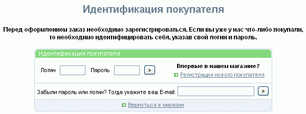
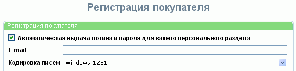
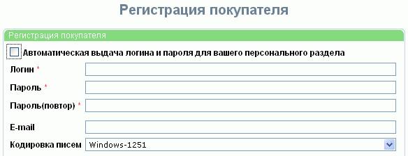
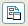
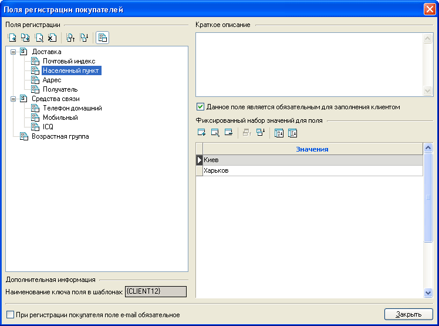
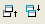
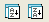

Прежде чем оформить заказ товара, каждый посетитель интернет магазина должен зарегистрироваться или идентифицироваться (в случае, если он зарегистрировался ранее).

Регистрация нового покупателя состоит в заполнении формы. По умолчанию покупателю предлагается автоматическая выдача логина и пароля:

однако, отказавшись от этого, он может ввести свои логин и пароль:

Помимо этого, в форме всегда присутствует поле для ввода E-mail и поле выбора кодировки, в которой будут отсылаться письма покупателю. Поле E-mail может быть как обязательным для заполнения, так и нет, для этого необходимо указать соответствующую опцию.
Кроме этого, могут быть дополнительные обязательные или необязательные к заполнению поля, содержание которых задается в окне "Поля регистрации покупателя", вызываемом из главного окна программы "Настройки - Поля регистрации покупателей". Поля регистрации могут группироваться в разделы.
В левой части окна "Поля регистрации покупателя" отображается дерево полей регистрации. Разделы и поля регистрации можно добавлять, удалять, переименовывать, группировать, сортировать.
Для обозначения того, чем - разделом или полем регистрации - является вновь созданный объект, служит кнопка

, расположенная над деревом полей регистрации. Раздел не имеет своих значений, а только группирует схожие подразделы или поля регистрации. Поле регистрации может позволять ввод при заполнении формы покупателем произвольного значения (если ни одно из фиксированного набора значений не задано), или иметь ряд фиксированных значений. Фиксированные значения можно дополнять, удалять, редактировать.

Порядок следования фиксированных значений можно изменять вручную кнопками

, или автоматически кнопками
.
Как раздел, так и поле регистрации могут иметь краткое описание. Помимо этого можно указать, обязательным для заполнения является данное поле, или нет.